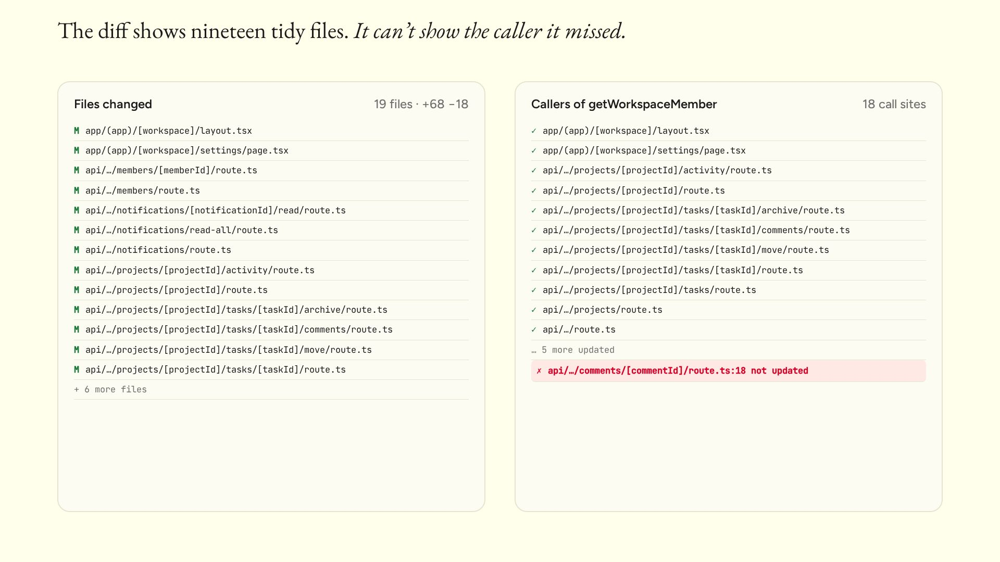
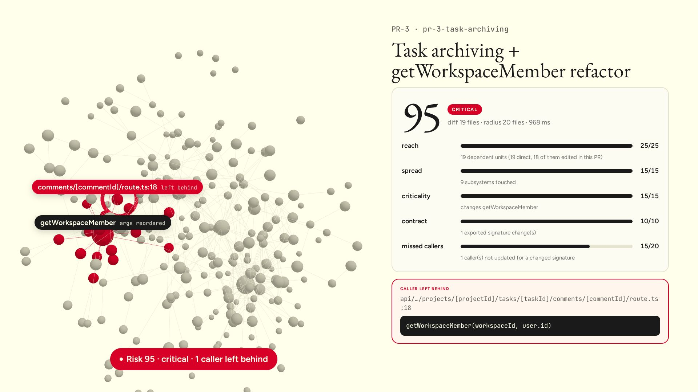

BlastRadius for IBM Bob
IBM Bob 2.0 Hackathon · workflow: code review
The problem

The solution
tree-sitter over git refs. Dependents, subsystems, signature changes, missed callers, untested units, ADRs in scope. A 0–100 score with a reason for every point.
MCP server, BlastRadius Reviewer mode and skill. Stops for a human, reads ADRs, sends a subagent into each subsystem, proposes fixes.
Subagents write vitest regression tests against a real in-memory database. A red test is a finding. Granite on watsonx.ai writes the summary.
IBM Bob at the core
| MCP server | analyze_pr get_dependents get_subsystem check_docs run_tests + 3 more |
| Custom mode + rules | BlastRadius Reviewer: evidence rules, stop at score ≥ 70 or a missed caller, edits limited to tests and approved fixes |
| Skill | blast-radius-review: the 9-step procedure, reusable from any mode |
| Parallel subagents | One per risky subsystem, each writes and runs one regression test |
| Document understanding | Judges each ADR rule with the file and line |
| /init · /review · Bob Shell | AGENTS.md written by Bob · Bob reviews this repo · bob run in GitHub Actions |

Proof on three seeded PRs
comments/[commentId]/route.ts:18: test red (403), fixed, green. ADR-002 violation caught.Business value
BlastRadius
IBM Bob IDE · MCP · subagents · watsonx.ai Granite · Bob Shell